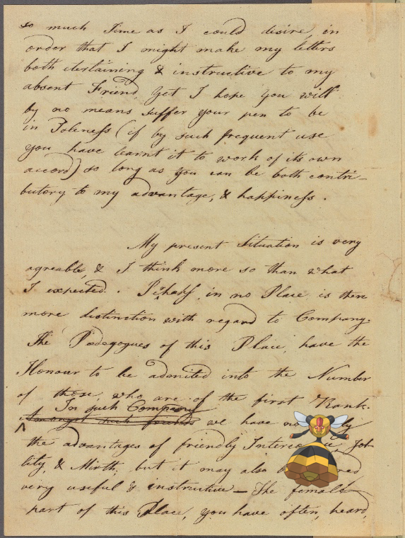

Pokémon in the NYPL archives
2018-7-9 06:10:06
Dusclops –
Hyde, Edward, Viscount Cornbury. New York
!
2018-7-9 04:10:03
Gabite @
Men in a workshop hammering sheets of copper for the construction of the Statue of Liberty.
2018-7-9 02:10:05
Yanmega |
[B-B]
2018-7-9 00:10:08
Patrat @
EE-Corsican Johnnies-Act II
.
2018-7-8 22:10:05
Growlithe +
Manhattan, V. 1, Double Page Plate No. 19 [Map bounded by W. Houston St., Varick St., Spring St., West St.]
.
2018-7-8 20:10:03
Honchkrow ;
High Street, from Ninth Street, Philadelphia.
.
2018-7-8 18:10:04
Feebas, Mismagius –
Porohy.
!
2018-7-8 16:10:04
Scizor ;
Germany, Prussia, 1786-1789
2018-7-8 14:10:06
on
Beisetzung des Generals von Emmich in Hannover. Das Gebet am Grabe.
!
2018-7-8 12:10:03
Gligar +
DINNER [held by] UNITED STATE LEGATION IN COPENHAGEN [at] [COPENHAGEN DENMARK?] (PRIVATE DINING ROOM)
2018-7-8 10:10:03
Castform –
Key
!
2018-7-8 08:10:03
Clawitzer |
Daibutsu, Hiogo
!
2018-7-8 06:10:05
Absol +
Letter to Mr. Claypole [David C. Claypoole, Philadelphia]
2018-7-8 04:10:04
Snivy |
Letter to his daughter Henrietta I. Bedford
!
2018-7-8 02:10:03
Bouffalant |
48th Street, looking Northwest from a point between Second and Third Avenues, Manhattan.
2018-7-8 00:10:04
Farfetchd –
28TH ANNUAL BANQUET [held by] FRIENDLY SONS OF ST. PATRICK OF CINCINNATI [at] "GIBSON HOUSE, CINCINNATI, OH" ([?HOT];)
.
2018-7-7 22:10:04
Haunter |
Burgundia Comitatus.
!
2018-7-7 20:10:04
Raikou |
Kubyaukgyi [also Gubyaukgyi] Pagoda at Pagan.
!
2018-7-7 18:10:04
Honedge, Espurr @
Great Britain. England, 1799.
2018-7-7 16:10:03
Yanma on
The Casa Colorada.
!
2018-7-7 14:10:11

Vespiquen |
Letter to Nathan Hale, Yale College [New Haven]
.
2018-7-7 12:10:04
Kricketot, Teddiursa –
DAILY DINNER [held by] STEAMER MARY POWELL [at] ? (SS;)
.
38
|
37
|
36
|
35
|
34
|
33
|
32
|
31
|
30
|
29
|
28
|
27
|
26
|
25
|
24
|
23
|
22
|
21
|
20
|
19
|
18
|
17
|
16
|
15
|
14
|
13
|
12
|
11
|
10
|
9
|
8
|
7
|
6
|
5
|
4
|
3
|
2
|
1
|
0